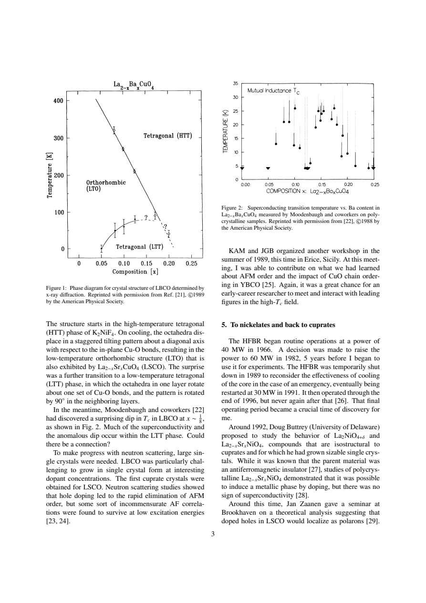
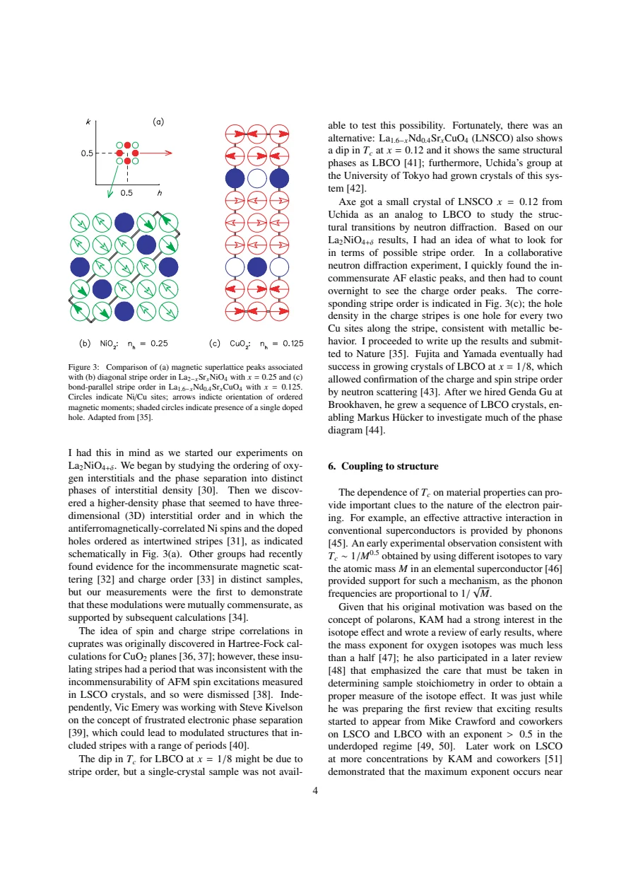
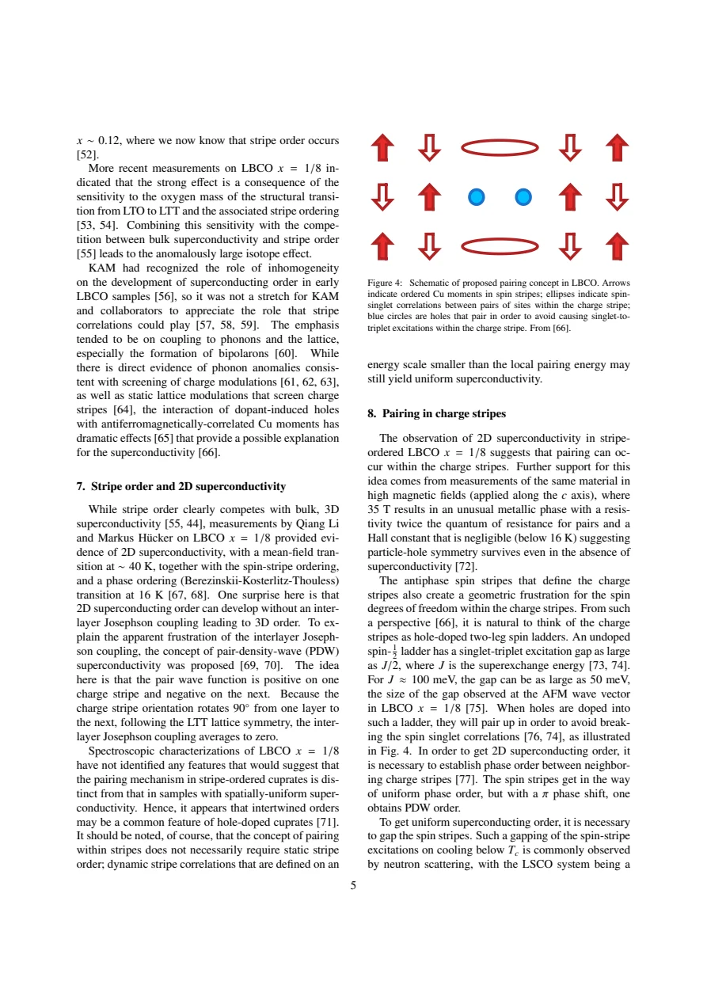

review; supplied arXiv v1 · Tranquada · supplied source 2023
La₂₋ₓBaₓCuO₄ as a superconducting Rosetta Stone
The review uses LBCO to distinguish local pairing from two-dimensional and three-dimensional coherence, with PDW and spin-ladder pairing presented as explanatory proposals.
The question: Why can strong superconducting correlations survive where bulk Tc is sharply depressed?
Before you start: the few terms you need
- stripe: spatial charge modulation with antiphase magnetic domains
- phase coherence: agreement of superconducting phase across regions or layers
- pair-density wave: superconducting order whose amplitude/sign modulates spatially
See → explain → test
Understand it in four pictures.
Picture 1 / 4
Build the historical evidence chain
Look for: Trace the early Tc anomaly to structural work and later stripe diffraction.
Swipe across the picture to read every label, or enlarge it below.
- LBCO one-eighth anomaly
- Tilt transformation
- Nd-LSCO stripe diffraction
- LBCO confirmation
Historical discovery path; analog evidence and later direct LBCO evidence are distinguished.
The stripe mechanism was established using an analog crystal before suitable LBCO crystals became available.
Picture 2 / 4
Keep pairing and coherence separate
Look for: Compare the scales discussed for stripe-ordered LBCO.
Swipe across the picture to read every label, or enlarge it below.
- Pairing correlations
- In-plane coherence
- Interlayer coherence
Conceptual distinctions, not one universal temperature sequence. The review discusses ~40 K and 16 K in-plane scales at one eighth.
Pairing correlations, in-plane phase order and bulk three-dimensional coherence need not start together.
Check the original: PDF p. 5
Picture 3 / 4
Test the PDW explanation
Look for: Compare sign-alternating stripe order with uniform interlayer phase coupling.
Swipe across the picture to read every label, or enlarge it below.
- Within a proposed PDW plane
- Between adjacent planes
Explanatory proposal; the review does not present an unambiguous direct measurement of the PDW order parameter.
Orthogonal stripe directions can frustrate the leading interlayer coupling of a proposed PDW.
Check the original: PDF p. 5
Picture 4 / 4
A ladder is a pairing proposal
Look for: Trace singlet correlations, doped holes and the need for phase order.
Swipe across the picture to read every label, or enlarge it below.
- Spin-ladder singlet scale
- Proposed attraction of doped holes
- Phase order still required
The author's proposed mechanism, with speculative steps retained explicitly.
A local pairing-energy argument does not alone establish macroscopic superconductivity.
Predict before revealing
In-plane superconducting correlations persist while bulk Tc is low. Which explanation is consistent with this review?
Choose an answer, then compare the reasoning.
The review uses LBCO to separate pairing and in-plane order from full three-dimensional coherence.
Read the answer
Interlayer phase coherence can be frustrated even when pairing correlations survive The review uses LBCO to separate pairing and in-plane order from full three-dimensional coherence.
Go deeper Follow the full argument
A historical synthesis with a viewpoint
Tranquada's supplied arXiv v1 is a historical and interpretive review of how LBCO sharpened questions about cuprate superconductivity. It recounts the early discovery, structural investigations, nickelate analogs and eventual stripe diffraction. The one-eighth dip in bulk Tc first appeared as an unexpected composition anomaly. LTT tilts then supplied a structural clue, but suitable LBCO single crystals were difficult to grow. Nd-substituted LSCO provided an analogous tilted system in which charge and spin stripe diffraction could first be identified; later LBCO crystals confirmed the order directly. This history explains why an early structural correlation and a later microscopic electronic observation should not be treated as the same piece of evidence. The review also advances a particular physical interpretation, which must be separated from the observations it assembles.
What is special about the stripe pattern
In a cuprate stripe picture, doped holes concentrate in charge-rich lines that act as antiphase boundaries between antiferromagnetically correlated spin regions. The magnetic phase reverses across a charge stripe, so this is more specific than arbitrary charge-rich bands. In LTT, the bond-axis preference rotates by 90° between neighboring planes and favors corresponding stripe directions. The review relates this to competition between hole kinetic energy and strong local magnetic interactions in the Cu–O electronic system. Nickelate stripes are a useful historical analogy but differ in orientation and filling, so their details should not be copied blindly into cuprates. The ordered stripe picture also differs from high-temperature chemical redistribution of Ba: it describes electronic organization within the material, not a measured miscibility gap of atomic compositions.
Superconductivity has several scales
At one eighth the review discusses superconducting correlations near 40 K together with spin ordering, and an in-plane Berezinskii–Kosterlitz–Thouless phase-ordering scale near 16 K. Bulk three-dimensional superconductivity appears at a substantially lower scale. The striking result is therefore not simply that stripes remove all pairing. Rather, strong correlations can exist within planes while interlayer coherence is frustrated. The proposed pair-density wave alternates the sign of the pair wavefunction on neighboring charge stripes. Orthogonal stripe directions in adjacent planes can make their leading Josephson overlap average to zero. This explains a possible route to layer decoupling, but remains a proposed interpretation rather than an unambiguous measurement of the full PDW order parameter. Uniform pairing, fluctuations and more complex couplings must be distinguished from the idealized cancellation argument.
The proposed local pairing picture
The review considers charge stripes as doped two-leg spin ladders embedded between antiphase magnetic domains. An undoped spin-half ladder can have a singlet–triplet gap of order J/2; with J around 100 meV, this supplies a scale near 50 meV. Doped holes are proposed to pair so that they avoid disrupting as many singlet correlations. The illustrated paired-hole cartoon is a mechanism proposal, not a direct real-space image. Even if such local pairs form, phase order between neighboring stripes is still necessary for superconductivity. A π shift between stripe phases gives PDW order, while different arrangements can yield uniform coherence. Dynamic stripe correlations can therefore be relevant to uniform superconductors as well as to the static stripe state. The author explicitly treats parts of this mechanistic synthesis as speculative.
How to evaluate the additional clues
A large oxygen isotope exponent near one eighth does not uniquely establish phonons as the pairing glue. The review explains that isotope sensitivity of structural and stripe transitions, combined with competition over bulk coherence, can strongly affect Tc. It also discusses high-field LBCO with a small Hall response and a resistance scale related to pairs, interpreting these as evidence that pair-like correlations may survive outside bulk superconductivity. Those transport clues are not direct pair counting. The practical reading strategy is to separate robust diffraction and transport observations from the PDW and ladder explanations that organize them. The title's Rosetta Stone metaphor refers to the material's ability to expose these distinctions; it does not claim that one source has definitively solved the general microscopic pairing problem.
Translate the mathematics Key equations and symbol meanings
ΔPDW(r) ~ ΔQ cos(Q·r)
Symbols: ΔQ: proposed modulated pair amplitude; Q: pair-modulation wavevector.
Teaching expression for alternating-sign pairing discussed in the review. It is not a fitted order parameter or direct image.
Eladder gap ~ J/2 ~ 50 meV for J ~ 100 meV
Symbols: J: antiferromagnetic superexchange scale.
Scale argument for the proposed ladder mechanism; local pair formation still requires phase coherence to become superconductivity.
αisotope = −d ln Tc / d ln M
Symbols: M: isotope mass; Tc: bulk superconducting transition.
Teaching definition. Structural and stripe sensitivity can make this exponent large without uniquely identifying the pairing interaction.
Read the evidence A guided look at the original figures

Open the full original page ↗

Open the full original page ↗

Open the full original page ↗
What this paper does—and does not—establish
- Supplied arXiv v1 is a review with a personal historical narrative, not a new comprehensive dataset.
- PDW cancellation and spin-ladder pairing are explanatory proposals.
- High-field transport and isotope effects do not uniquely determine the microscopic pairing interaction.
Explain it back.
Try answering aloud before opening the explanation.
Was the first direct stripe identification made in LBCO?
The historical route used Nd-LSCO analog crystals before later direct confirmation in LBCO.
Does a large isotope exponent uniquely prove phonon pairing?
No. Structural and stripe-order sensitivity can influence bulk Tc.
Why is a ladder gap insufficient for superconductivity?
It supplies a local energy scale; phase order between stripes and layers remains necessary.
Connect the next paper.
Source version, reading coverage and preservation
Complete supplied arXiv v1 body read on pages 1–6; rendered pages 3–5 inspected for historical plots, stripes and pairing cartoon. Reference pages 6–10 checked as reference material.
Reviewed body pages: 1, 2, 3, 4, 5, 6, 7, 8, 9, 10. External papers summarized in the review are not independently re-read; no separate supplement supplied.
Original file retained byte for byte. SHA-256: e600f7dc04dda0855619f82f5c3f058ba66c6155752476ef616ff7b99b5e7a35
Filename: arXiv - Tranquada - LBCO as a superconducting Rosetta Stone - 2023.pdf.